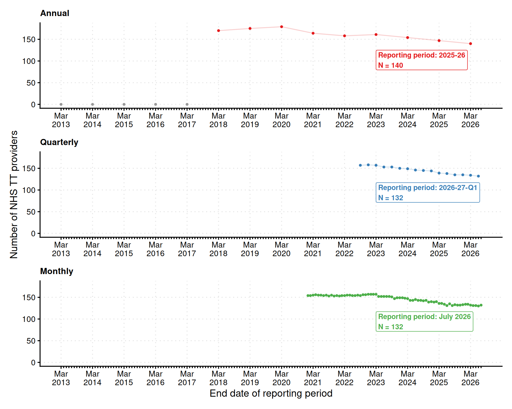

Note: The counts reflect the data we have added to the package so far and may differ from the full reports published by NHS England. For example, before 2017-18 the annual reports used a substantially different data format. We have not yet added provider level breakdowns for these years, only totals for England.
This page shows how many NHS Talking Therapies providers submitted data in each reporting period of the annual, quarterly, and monthly datasets.